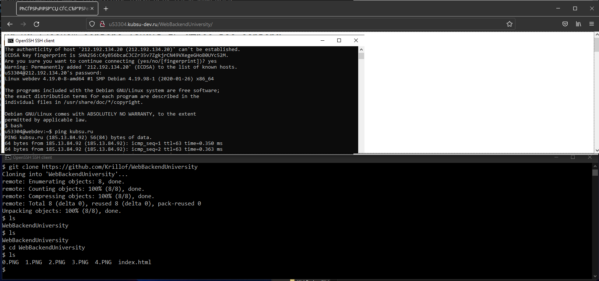

Подключение удалось

IP-адрес сервера можно увидеть сразу под использованной командой. Вообще, ping проверяет связь с сервером с помощью передачи пакетов. Передачу пакетов мы останавливаем сочетанием клавиш Ctrl+C.
С помощью nslookup посмотрели A-записи и MX-записи. Первые нужны для обычной связи с доменом (Например через браузер), вторые - для почты.
С помощью whois узнали дату регистрации.
Репозиторий с Github был склонирован с помощью git на сервер и к нему можно получить доступ через браузер.
С использованием FileZilla получилось достать копию репозитория на мой компьютер.
Теперь необходимо обновить копию репозитория на сервере. Для этого, обновляем репозиторий на GitHub и обновляем его командой git pull.